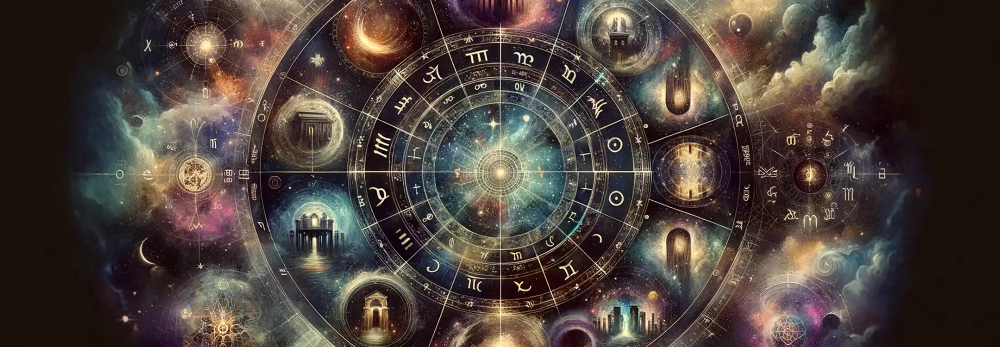

The Twelve Houses in astrology each represent a distinct area of life experiences and personal development. Starting from the First House, which is associated with self-identity and initiation, to the Twelfth House, symbolizing the subconscious, endings, and spiritual transcendence. The houses are arranged in a circular chart, known as the natal or birth chart, and are determined by the time and location of one's birth. They work in tandem with the zodiac signs and planets, providing a more detailed and personalized astrological analysis. The first house begins with the Ascendant or Rising Sign, the zodiac sign that was on the Eastern horizon at the time of birth, setting the tone for the entire chart and thus, influencing the way in which the energies of the other houses and their planetary occupants are manifested in an individual's life.
The role of houses in shaping one's astrological profile is profound, as they frame the context in which the planets express their energies. When a planet resides within a certain house, it activates the themes of that house, coloring them with its own characteristics and influence. For instance, Mercury in the Third House can indicate a sharp, communicative mind, as the Third House governs communication, while Venus in the Seventh House might suggest an affinity for harmony and pleasure in partnerships, which is the domain of the Seventh House. Furthermore, the concentration of planets within certain houses in an individual's chart can highlight areas of life that are of particular importance or challenge. An abundance of planets in a specific house can indicate a focal point of energy and activity, requiring attention and development. Conversely, houses with no planetary placements are not inactive but may represent areas of life that require less effort or that naturally integrate into the individual's life path. Understanding the interplay between the houses and planets is essential for a nuanced interpretation of the natal chart, offering insights into an individual's personality, potential, and life journey.
The First House in astrology, also known as the House of Self, plays a critical role in shaping your identity, physical appearance, and the initial impressions you make on others. When you have planets or significant signs positioned in your First House, these celestial bodies imbue their energies into your persona, influencing how you present yourself to the world and how you initiate actions. For example, having Mars in the First House can lend a dynamic and assertive edge to your personality, making you appear confident and sometimes aggressive. Similarly, if a sign like Libra dominates your First House, you might exude charm and a sense of balance in your interactions. These astrological placements in the First House are like the lens through which your core self and intentions are projected, shaping the immediate impact you have on others and the way you embark on your life's journey.
The positioning of planets within your astrological chart, especially in relation to the houses, plays a pivotal role in personal development throughout your lifetime. Each planet, with its unique set of characteristics and influences, can accelerate growth, introduce challenges, and highlight strengths within the context of the house it occupies. For instance, Jupiter in the First House can suggest a life filled with optimism, growth, and many opportunities for self-expansion, as Jupiter's benevolent influence magnifies the traits associated with the self and identity. These planetary influences act as catalysts for personal evolution, pushing individuals to explore the full spectrum of their potential, overcome obstacles, and mature in alignment with their natal chart's blueprint.
The Second House in your astrological chart governs wealth, possessions, and your sense of self-worth. When planets or significant signs reside in this house, they deeply influence your approach to finances, material assets, and how you value yourself and your talents. For example, Venus in the Second House could indicate a natural ability to attract wealth and a love for luxury, as Venus brings its qualities of attraction, value, and pleasure to the realms governed by the Second House. Similarly, the presence of a sign like Taurus here, known for its affinity for stability and material security, can heighten your focus on financial well-being and physical comforts. These placements highlight the interconnectedness of material resources and self-esteem, suggesting that your possessions and financial status can significantly affect how you perceive your worth and value in the world.
Planetary placements in the Second House have a profound impact on your financial outlook and how you manage resources. The planets' energies can shape your earning potential, spending habits, and overall financial strategy. For instance, Saturn in the Second House might instill a disciplined, cautious approach to money, emphasizing saving and long-term security, possibly indicating financial challenges that require perseverance. On the other hand, Jupiter in the same house could suggest a generous, optimistic attitude toward finances, often bringing luck and abundance but also a tendency towards extravagance. Understanding the influence of these planetary placements can offer valuable insights into your financial behaviors and motivations, guiding you towards a more conscious and potentially prosperous handling of your material resources.
Planets located in the Third House of your astrological chart greatly influence your communication skills, relationships with siblings, and your experiences with short journeys. This house governs all forms of communication, be it verbal, written, or digital, and planets here can either facilitate or challenge your ability to express yourself. Mercury in the Third House, for instance, could signify a highly communicative individual, adept at learning and conveying ideas efficiently, given Mercury's association with the mind and communication. This placement can also indicate a strong bond with siblings or neighbors and a penchant for engaging in frequent short trips that stimulate the mind and satisfy curiosity. The presence of planets in this house highlights the importance of exchange and movement in your life, shaping how you connect with those immediately around you and navigate your local environment.
The planets residing in your astrological houses significantly affect how you engage in social interactions, and their placement in the Third House can specifically color these dynamics. For example, Venus in the Third House can make for a charming and diplomatic communicator, someone who easily attracts and maintains pleasant social connections. Such a placement can enhance your social grace, making interactions harmonious and often benefiting from social activities. Conversely, Mars in the Third House might make your communication style more assertive or even confrontational, leading to dynamic but potentially contentious exchanges. The energies of the planets in this house directly impact your daily interactions, the rapport you have with peers, and your overall approach to social engagement.
The Fourth House in your astrological chart is deeply connected to your roots, ancestry, and domestic life, representing your foundation, home, and sense of security. When planets occupy this house, they significantly influence these areas, shaping your emotional base and private life. The Moon in the Fourth House, for instance, can intensify your need for a nurturing and secure home environment, highlighting strong ties to family and a deep connection to your heritage. This placement often points to an intuitive understanding of your roots and a desire to maintain familial traditions. It can also indicate fluctuating circumstances in your domestic life, driven by the Moon's ever-changing nature. Planets in this house underscore the importance of your personal sanctuary, affecting how you experience comfort and emotional well-being within your home.
The presence of planets in the Fourth House can also profoundly impact family dynamics, affecting the relationships within your home and your approach to family matters. Saturn in the Fourth House, for example, could signify a structured or disciplined family environment, possibly with challenges that necessitate responsibility and maturity within the family unit. This placement might also indicate lessons to be learned from family history or ancestral patterns that shape your sense of responsibility and foundation. The energies of planets in this house reveal how family relationships serve as a crucible for personal growth, highlighting the lessons and strengths derived from your closest personal ties.
Planets in the Fifth House have a substantial impact on your creativity, romantic life, and the pursuit of personal joys. This house governs self-expression, leisure, and love affairs, with planetary tenants here coloring these aspects with their unique energies. For instance, Neptune in the Fifth House could bestow a rich imagination and a penchant for idealistic romance, enhancing artistic talents but also possibly leading to illusions in love. This placement often suggests a deep well of creative potential and a yearning for a connection that transcends the ordinary. The planets in this house influence how you express joy and creativity, and how you experience pleasure and love, shaping the pursuits that bring you happiness and fulfillment.
The influence of planetary placements in the Fifth House extends significantly to the realms of love and artistic expression. Venus in the Fifth House, for example, amplifies the desire for romance, beauty, and harmonious creative expression, making artistic pursuits and romantic encounters especially gratifying. This placement can indicate a natural flair for the arts and a love life marked by charm and affection. Similarly, the Sun in the Fifth House can signify a strong drive for self-expression and the pursuit of pleasure, highlighting a personality that shines brightest when engaging in creative endeavors or romantic adventures. The energies of planets in this house shape not only your approach to love and creativity but also how you find joy and express your individuality through these channels.
When planets are situated in the Sixth House of your astrological chart, they significantly influence your daily routines, work life, and overall wellness. This house is associated with service, health, and daily duties, and planetary placements here can dictate your approach to these areas. For example, Mars in the Sixth House might indicate a vigorous approach to work and a strong drive to improve health, often leading to a preference for physically demanding tasks or a career that requires assertiveness. However, it may also suggest a potential for stress-related health issues if not balanced properly. Planets in this house highlight the importance of structure, discipline, and care in your daily life, affecting how you manage responsibilities and maintain your physical and mental well-being.
The Sixth House's planetary residents not only affect your daily routines and work life but also have a profound impact on your physical and mental health. Jupiter in the Sixth House, for example, can bring a positive outlook on health matters, often correlating with good fortune in maintaining wellness, but it might also lead to excess in health habits or overindulgence. This placement can signify a growth-oriented approach to health, where learning and expansion are key to your well-being strategy. The influence of planets in this house serves as a reminder of the interconnectedness of daily habits and health, urging a balanced and mindful approach to both work and wellness practices.
The Seventh House in your chart, often referred to as the House of Partnerships, governs marriage, business partnerships, and long-term relationships. Planets residing in this house deeply influence your approach to these significant bonds. Venus in the Seventh House, for example, could denote a harmonious and affectionate approach to partnerships, attracting relationships that emphasize beauty, balance, and cooperation. This placement often suggests a strong desire for partnership and a talent for diplomacy in relationships. The presence of planets in this house underscores the themes of commitment, collaboration, and the mirroring of self through others, shaping how you engage in one-on-one relationships and what you seek from them.
The planetary influences in the Seventh House extend beyond the surface dynamics of partnerships, offering deeper insights into your relational patterns and tendencies. Saturn in the Seventh House, for instance, might signify serious and committed relationships, but it could also indicate challenges or delays in forming partnerships, requiring maturity and perseverance to overcome. This placement often teaches lessons about responsibility and endurance in relationships, highlighting the need for structure and stability. The planets in this house reflect the lessons and growth opportunities presented through your closest relationships, shaping how you understand and evolve through the give-and-take of partnership.
The Eighth House is the realm of regeneration, sexuality, deep connections, and the mysteries of life and death. Planets placed in this house impact your experiences with transformation, intimate bonds, and shared resources. Pluto in the Eighth House, for instance, can intensify the focus on transformation and personal evolution, often through challenging yet profound experiences that necessitate a rebirth of the self. This placement is associated with deep, transformative relationships and a keen interest in the mysteries of existence. The presence of planets in this house indicates significant life changes and the potential for deep, soulful connections, emphasizing the importance of letting go and embracing renewal.
The influence of planets in the Eighth House goes beyond surface-level interactions, delving into the depths of personal evolution and the unconscious. Neptune in the Eighth House, for example, might blur the boundaries in intimate relationships and financial matters, leading to experiences that dissolve the ego and foster spiritual growth. This placement can also heighten intuition and psychic sensitivity in the realm of deep connections. The planets in this house guide you through transformative experiences, shedding light on the shadows of your psyche and inviting profound personal growth through the challenges and mysteries of life.
The Ninth House encompasses higher learning, travel, and the expansion of your life's philosophies and beliefs. Planetary placements in this house influence your quest for knowledge, your experiences with different cultures, and your philosophical outlook on life. Jupiter in the Ninth House, its natural domicile, can amplify the desire for exploration and the pursuit of wisdom, often manifesting as a lifelong learner or traveler seeking to understand the broader truths of the world. This placement encourages a broad-minded approach to life, where growth and expansion are key. The energies of the planets in this house inspire you to reach beyond the familiar, seeking meaning, education, and enlightenment through diverse experiences.
Planetary influences in the Ninth House also play a significant role in guiding your spiritual and intellectual pursuits, shaping your beliefs and ethical principles. Mercury in the Ninth House, for example, could signify a mind that thrives on learning and communicating complex ideas, often driven by a quest for knowledge and an ability to perceive the interconnectedness of various philosophical or cultural systems. This placement fosters a love for sharing knowledge, whether through teaching, writing, or engaging in debates about moral and ethical issues. The planets in this house challenge you to expand your horizons, both intellectually and spiritually, urging a continuous journey toward understanding and wisdom.
The Tenth House in your astrological chart is often referred to as the House of Career and Reputation, and it plays a pivotal role in your professional life, public standing, and the legacy you build. When planets are positioned in this house, they significantly shape your approach to your career and how you are perceived in the public eye. For instance, Saturn in the Tenth House can indicate a person who is ambitious, disciplined, and willing to work hard to achieve their professional goals, often earning a reputation for reliability and authority in their chosen field. This placement can also suggest that career advancements come through perseverance and overcoming challenges, with each obstacle serving as a stepping stone towards success. Planets in this house highlight the importance of career and public image in your life, influencing how you pursue your professional aspirations and how you are recognized by society.
The presence of planets in the Tenth House not only affects your career trajectory but also offers insights into the nature of your professional interactions and the fulfillment you derive from your work. For example, Mars in the Tenth House can bestow a competitive edge and a drive to take initiative and lead, often correlating with careers that require courage, assertiveness, and the ability to take decisive action. However, this placement might also indicate potential conflicts in professional settings, requiring a balance between ambition and cooperation. The planetary energies in this house guide your professional endeavors, shaping your approach to achievement, the challenges you face in your career, and the impact you wish to make in the professional world.
The Eleventh House, known as the House of Friendships and Future Aspirations, governs your social circles, communal activities, and long-term goals. Planetary placements in this house influence your interactions within groups, your friendships, and your hopes for the future. For instance, the presence of Venus in the Eleventh House can signify a warm and sociable nature, with an ability to form harmonious relationships within groups and a tendency to attract friends who may also offer material or emotional support. This placement often suggests that achieving your aspirations involves collaboration and the support of your social network. The planets in this house reflect your ability to connect with collective goals and the role of friendships in the pursuit of your dreams.
Planets located in the Eleventh House also have a profound impact on the nature of your social interactions and the way you envision your future. Jupiter in the Eleventh House, for example, can expand your social network, bringing many opportunities for forming beneficial alliances and friendships that encourage your growth and broaden your horizons. This placement often correlates with a person who sets high aspirations and achieves them through optimism, generosity, and the support of their community. The influence of planets in this house highlights the significance of social connectivity and communal involvement in realizing your hopes and dreams, urging you to align your personal aspirations with larger societal or humanitarian goals.
The Twelfth House, often associated with the subconscious, secrets, and hidden talents, is the domain where the unseen aspects of your life and psyche reside. Planets in this house can significantly influence your inner world, revealing hidden strengths and unconscious patterns that shape your life in subtle ways. Neptune in the Twelfth House, for instance, can intensify your intuition and spiritual inclinations, offering deep insights into the collective unconscious and potentially unlocking psychic abilities or artistic talents that stem from tapping into universal themes. This placement may also indicate challenges in distinguishing boundaries, requiring a journey of self-discovery to integrate these ethereal experiences into your conscious life. The planets in this house encourage introspection and the exploration of your inner landscape, often leading to profound personal transformations.
The influence of planets in the Twelfth House extends to the realm of personal growth, healing, and the exploration of hidden aspects of your identity. For example, Pluto in the Twelfth House can signify a powerful drive for transformation that occurs at a deep, subconscious level, often through confronting and integrating shadow aspects of the self. This placement can bring about intense inner work, leading to significant personal evolution as hidden fears and power dynamics are brought to light and transformed. The presence of planets in this house illuminates the less visible parts of your psyche, urging you to engage with your deeper self and uncover the strength that lies in vulnerability and the acceptance of your entire being.
Special and powerful house placements in an astrological chart can significantly amplify the areas of life they govern, granting unique strengths and challenges to the individual. These placements often mark areas where a person will experience significant growth, achievement, or transformation. For instance, a planet like Jupiter in the Second House might indicate exceptional opportunities for wealth and resource accumulation, while Mars in the Sixth House could denote a strong drive and energy toward work and health matters. These special placements act as focal points in the chart, drawing attention to the life themes they represent and often dictating where a person's most notable efforts and achievements will manifest. If you have one of these placements, it could be a beacon highlighting where you might find your greatest successes and challenges, urging you to focus your energies there for maximum growth.
Unique planetary placements in an astrological chart highlight areas of life that are marked by distinctive experiences, talents, or challenges. These placements can significantly shape an individual's path, offering both opportunities for success and lessons for growth. For example, having Neptune in the Tenth House might indicate a career that involves creativity, healing, or spirituality, but it may also bring challenges related to clarity and direction in one's professional life. Understanding these unique placements helps to uncover the deeper layers of one's personality and life journey, revealing how specific energies can be harnessed or navigated for personal development and fulfillment. Having such a placement in your chart suggests that embracing the qualities associated with it could unlock paths to personal fulfillment and professional achievement.
Individuals with the Sun in the Tenth House are often "born to shine" in their careers and public life. This powerful placement emphasizes success, recognition, and achievement in professional endeavors. The Sun's energy in the house of career grants these individuals a natural authority and a drive to achieve their goals, often leading to leadership positions. Their identity is closely tied to their career and public image, making them ambitious and highly motivated to leave a mark on the world. This placement suggests a life path where professional accomplishments and contributions to society play a central role in the individual's sense of self and life purpose. If this is your placement, it implies a destiny where your professional life and public achievements will be central to your identity and fulfillment.
The Moon in the Fourth House places a strong emphasis on emotional foundations, home life, and connections to family and roots. This placement indicates a deep need for security and comfort, with the home environment playing a crucial role in the individual's emotional well-being. People with this placement often have a strong sense of tradition and a deep connection to their heritage or past, which significantly influences their emotional landscape. They may possess an intuitive understanding of family dynamics and a nurturing disposition, making them natural caregivers within their family or close-knit community. For those with this placement, creating a nurturing and secure home life may be essential to your emotional and overall well-being.
With Mercury in the Third House, an individual becomes a master communicator, skilled in all forms of expression and information exchange. This placement enhances intellectual agility, making these individuals quick thinkers and adept at both learning and teaching. They have a natural curiosity and a desire to acquire knowledge, often excelling in writing, speaking, and other communicative endeavors. Their ability to articulate ideas clearly and engage in meaningful dialogue makes them effective in social interactions, networking, and any profession that requires strong communication skills. If Mercury is in your Third House, harnessing your communication skills could lead to significant success in personal and professional realms.
Venus in the Seventh House bestows a natural charm and grace in relationships, making these individuals highly adept at forming harmonious partnerships. This placement emphasizes the importance of cooperation, diplomacy, and aesthetic harmony in close relationships, including both business and personal partnerships. People with this placement often have an innate understanding of give-and-take and a desire for peace and balance in their interactions with others. Their charm and tact make them beloved partners and collaborators, often attracting beneficial alliances and a fulfilling social life. Having Venus in this house in your chart suggests that cultivating relationships and partnerships will be a key source of joy and success in your life.
Individuals with Mars in the First House embody the warrior spirit, marked by assertiveness, courage, and a pioneering attitude. This placement imbues them with a dynamic energy and a strong drive to assert their individuality and pursue their desires. They are natural leaders, unafraid to take risks or face challenges head-on. Their assertive nature can be both an asset and a challenge, as it grants them the determination to overcome obstacles but may also lead to impulsive actions or conflicts. Harnessing this energy constructively can lead to significant personal achievements and a strong sense of self. If Mars is in your First House, channeling this assertive energy constructively could be key to realizing your ambitions and defining your individuality.
Jupiter in the Ninth House creates the eternal seeker, an individual with an insatiable thirst for knowledge, exploration, and the expansion of horizons. This placement fosters a love for travel, higher education, and philosophical or spiritual pursuits, offering opportunities for growth through diverse experiences. Individuals with this placement are often optimistic and open-minded, finding luck and abundance in endeavors that broaden their understanding of the world and the human condition. Their journey is one of continuous learning, with each new experience bringing wisdom and a deeper sense of meaning to their lives. With Jupiter in your Ninth House, embracing a path of exploration and learning can lead to profound personal growth and fulfillment.
Saturn in the Tenth House signifies the architect of success, where discipline, structure, and perseverance lead to professional achievements and recognition. This placement demands hard work and a long-term approach to career goals, often resulting in enduring success and authority in one's chosen field. Individuals with this placement may face early challenges or responsibilities that shape their approach to their career, instilling in them a strong work ethic and a commitment to excellence. The rewards of this placement come through persistence, maturity, and the mastery of one's craft, leading to respect and a lasting legacy. For those with Saturn in the Tenth House, embracing discipline and perseverance in your career pursuits can lead to lasting achievements and recognition.
Having Chiron, Uranus, Neptune, or Pluto in key houses introduces unusual and influential aspects to an astrological chart, each bringing its unique energy and lessons. Chiron's placement can indicate where healing and transformation through overcoming personal wounds are central themes. Uranus brings innovation, sudden changes, and a break from tradition, challenging the status quo in the house it occupies. Neptune's influence involves intuition, creativity, and spirituality, but also confusion and disillusionment, highlighting areas where clarity may be sought. Pluto's presence marks profound transformation, power struggles, and rebirth, indicating deep and often challenging changes that ultimately lead to personal growth and empowerment. If you have one of these planets prominently placed in your chart, it suggests a journey marked by transformation, innovation, or healing in the areas of life the house governs.
A stellium, defined as three or more planets in a single house, significantly emphasizes the themes and life areas associated with that house. This concentration of energy in one part of the chart can lead to a focused or intensified expression of the planets' influences, making the themes of that house a dominant force in the individual's life. For example, a stellium in the Sixth House might indicate a life significantly shaped by work, health, and service to others, while a stellium in the Eleventh House could emphasize the importance of community, friendships, and the pursuit of collective goals. The presence of a stellium requires careful navigation to balance the concentrated energy and fully harness its potential for growth and achievement in the associated life areas. If your chart features a stellium, it indicates that the themes of that house will play a pivotal role in your life, offering both challenges and opportunities for profound personal development.
Synthesizing house and planetary information in an astrological chart is a nuanced process that involves understanding the interplay between the celestial bodies and the astrological houses they occupy. This synthesis allows for a holistic view of an individual's potential, challenges, and the various life areas influenced by the cosmic configuration at the time of their birth. By examining the qualities of the planets, their positions in the zodiac signs, and their placements within the houses, astrologers can weave together a comprehensive narrative that highlights the dynamics at play in an individual's life. This integrated approach offers insights into the person's character, preferences, and tendencies, as well as the timing and nature of significant life events, facilitating a deeper understanding of one's life path and personal evolution.
Personalizing astrology for self-discovery and growth involves more than just understanding one's sun sign; it requires a deep dive into the entire natal chart, acknowledging the complexities and nuances that the chart reveals about an individual's personality, life purpose, and potential paths for personal development. By reflecting on the intricate details of planetary placements, aspects, and house positions, individuals can gain profound insights into their inherent strengths and weaknesses, areas of life that may require attention or transformation, and the unique gifts they possess. This personalized astrological exploration serves as a powerful tool for self-awareness, offering a roadmap for growth and self-improvement that aligns with one's cosmic blueprint, encouraging individuals to live more authentically and in harmony with their natural tendencies.
The journey through the astrological houses represents a comprehensive voyage through the various facets of human experience, from the personal identity and values reflected in the first houses to the collective, transpersonal themes of the later houses. Each house illuminates a specific domain of life, offering insights into our deepest desires, challenges, and the evolutionary lessons we are meant to learn. This journey underscores the cyclical nature of life, with each house building upon the lessons of the previous one, guiding us toward greater understanding, integration, and fulfillment. By reflecting on the journey through the houses, individuals can appreciate the interconnectedness of their experiences, seeing how each area of life contributes to their overall growth and the unfolding of their unique destiny.
Applying astrological insights in everyday life involves translating the profound wisdom of one's natal chart into practical, actionable guidance that can inform daily decisions, relationships, career choices, and personal growth strategies. By understanding the energies and themes associated with the planetary placements and houses in their chart, individuals can navigate life with greater awareness and intentionality. This might involve aligning activities with the natural strengths and preferences indicated by their chart, consciously working to balance or mitigate challenging aspects, or timing important endeavors in harmony with favorable astrological transits. Integrating astrological insights into daily life empowers individuals to live in alignment with their cosmic blueprint, facilitating a more fulfilling and purpose-driven existence.
Understand your birth chart, moon sign, moon phase and more
Sign up to recieve free daily readings, insights, horoscopes and more